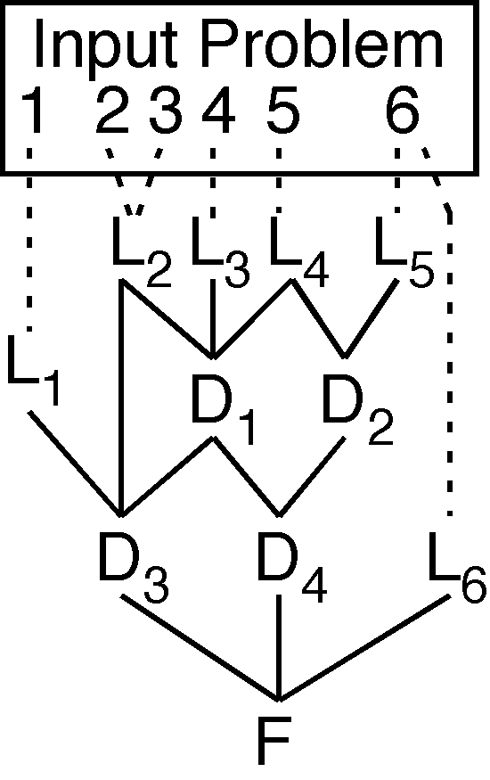

Recording Derivations

Derivation DAGs
- Leaf, inferred, and root nodes
- Need to record
- Leaf formulae
- Inferred formulae with parent references
- Would like to record
- Roles
- Inference syntactics (for deterministic replay)
- Inference semantics (for derivation analysis)
- The TPTP language can do it all, of course
Uses
- Proof verification
- Proof visualization
- Lemma extraction